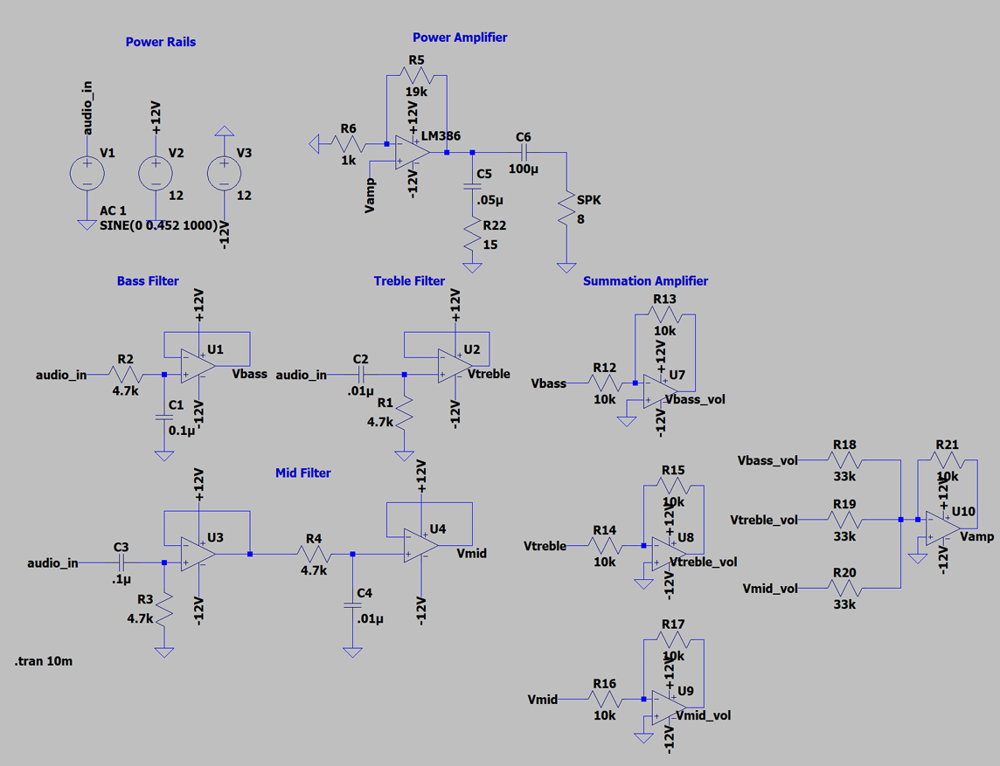

Analog Audio Equalizer and Amplifier

Overview
This project was a three-band analog audio equalizer designed to separate a full-range audio signal into bass, mid, and treble channels, apply independent volume control to each band, recombine the processed signals, and drive an 8 Ω speaker. The filter network used target cutoff frequencies of 320 Hz and 3.2 kHz, with LM324 op-amps providing buffering, gain control, and summation before an LM386 power-amplifier stage.
More details
The circuit was designed and simulated in LTspice before being built and validated experimentally. Measured filter cutoff frequencies remained within the required 10% tolerance, while the recombined output remained close to the 100 mVrms design target across the three frequency bands. The final LM386 stage produced 2.3221 Vrms into an 8 Ω speaker, corresponding to approximately 674 mW of output power and exceeding the 400 mW requirement.
Project report
The complete design calculations, filter theory, experimental procedure, oscilloscope captures, tolerance analysis, and final results are included in the full project report below.
← Back to projects